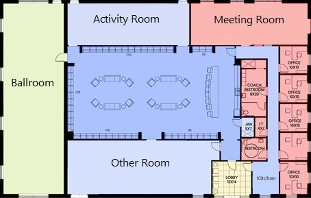

<!-- Client Request Markup -->
<mat-toolbar>
    <mat-toolbar-row>
        <h1>Brookings Activity Center Event Request</h1>
    </mat-toolbar-row>
</mat-toolbar>
<mat-card class="my-card">
    <mat-card-content>
        <form class="my-form">
            <mat-form-field class="full-width">
                <mat-label>First Name</mat-label>
                <input matInput placeHolder="First Name" name="fname" required>
            </mat-form-field>
            <mat-form-field class="full-width">
                <mat-label>Last Name</mat-label>
                <input  matInput  placeholder="Last Name" name="lname"  required>
            </mat-form-field>
            <br>
            <mat-form-field class="full-width">
                <mat-label>Phone Number</mat-label>
                <input  matInput  placeholder="Phone Number" name="phoneNum"  required>
            </mat-form-field>
            <mat-form-field class="full-width">
                <mat-label>Email</mat-label>
                <input  matInput  placeholder="Email" name="email" required>
            </mat-form-field>
            <br>
            <mat-radio-group>
                <label labelPosition="before">I am requesting a:</label> 
                <mat-radio-button value="oneDay">One day event</mat-radio-button>
                <mat-radio-button value="multipleDays">Multiple day event</mat-radio-button>
            </mat-radio-group>
            <br>
            <mat-form-field>
                <mat-label>Event Request Date</mat-label>
                <input matInput [matDatepicker]="picker2" placeholder="Choose a date" required>
                <mat-datepicker-toggle matSuffix [for]="picker2"></mat-datepicker-toggle>
                <mat-datepicker #picker2></mat-datepicker>
            </mat-form-field>
            <mat-form-field>
                <mat-label>Event Request Dates</mat-label>
                 <input matInput placeholder="Choose a date" [satDatepicker]="picker" [value]="date" required>
                 <sat-datepicker #picker [rangeMode]="true"></sat-datepicker>
                 <sat-datepicker-toggle matSuffix [for]="picker"></sat-datepicker-toggle>
            </mat-form-field>
            <div class="container" id="form-room-reservation">
                <h5>Room Reservation Blueprint</h5>
                
                <mat-radio-button id="ballroom" value="ballroom"></mat-radio-button>
                <mat-radio-button id="activity-room" value="activity-room"></mat-radio-button>
                <mat-radio-button id="meeting-room" value="meeting-room"></mat-radio-button>
                <mat-radio-button id="other-room" value="other-room"></mat-radio-button>
            </div>
        </form>
    </mat-card-content>
    <mat-card-actions>
        <button mat-raised-button (click)="request()" color="primary">REQUEST</button>
    </mat-card-actions>
</mat-card>